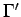
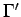

Inhalt Index DeskTop Bronstein

 Differentialrechnung Differentiation von Funktionen einer Veränderlichen Differentiationsregeln für Funktionen einer Veränderlichen
Differentialrechnung Differentiation von Funktionen einer Veränderlichen Differentiationsregeln für Funktionen einer Veränderlichen


Wenn eine differenzierbare Funktion y = f(x) durch ihre Kurve  in kartesischen Koordinaten in einem Intervall a < x < b dargestellt ist, kann die Kurve  ihrer Ableitung näherungsweise konstruiert werden. Die Konstruktion einer Tangente in einem gegebenen Kurvenpunkt nach Augenmaß kann recht ungenau ausfallen. Wenn aber die Richtung der Tangente MN (s. Abbildung) bekannt ist, kann der Berührungspunkt A genauer ermittelt werden.
in kartesischen Koordinaten in einem Intervall a < x < b dargestellt ist, kann die Kurve  ihrer Ableitung näherungsweise konstruiert werden. Die Konstruktion einer Tangente in einem gegebenen Kurvenpunkt nach Augenmaß kann recht ungenau ausfallen. Wenn aber die Richtung der Tangente MN (s. Abbildung) bekannt ist, kann der Berührungspunkt A genauer ermittelt werden.